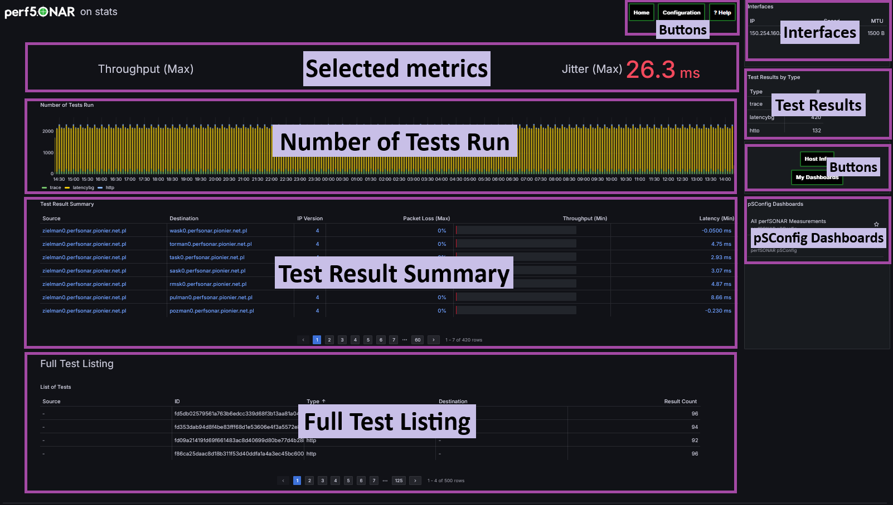
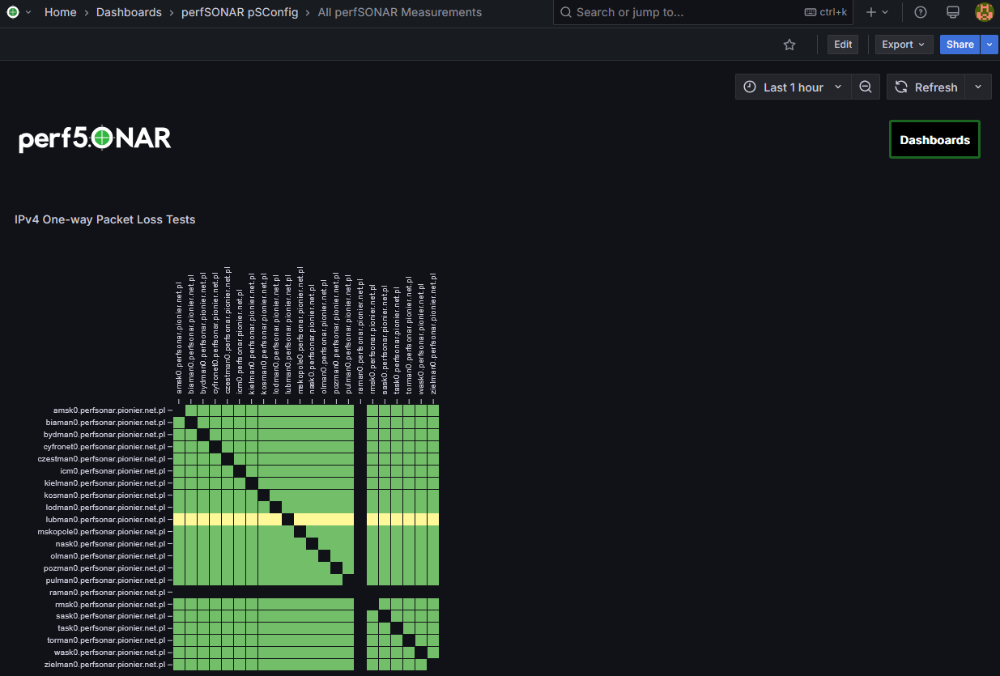
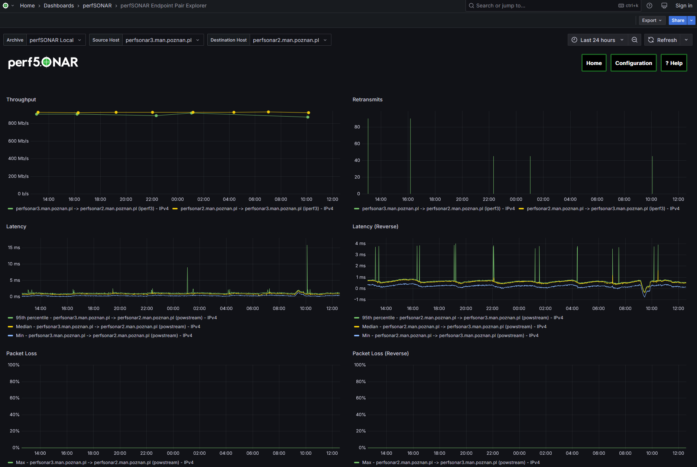
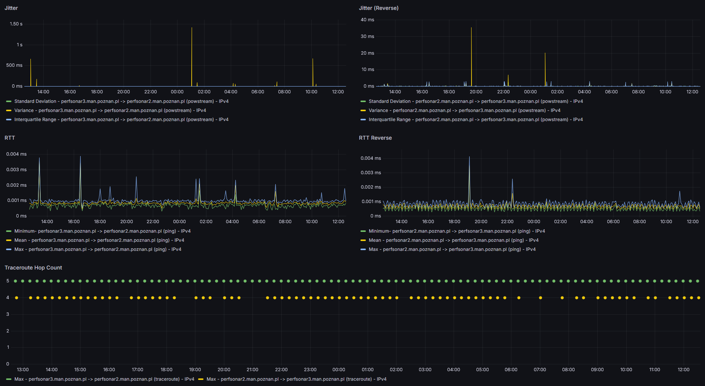
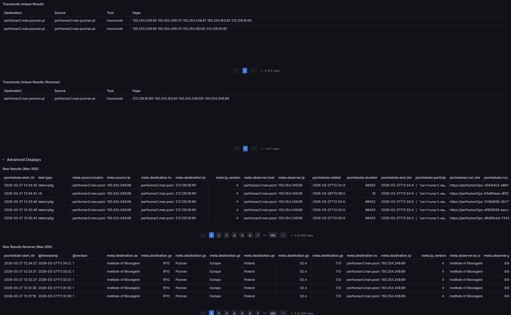
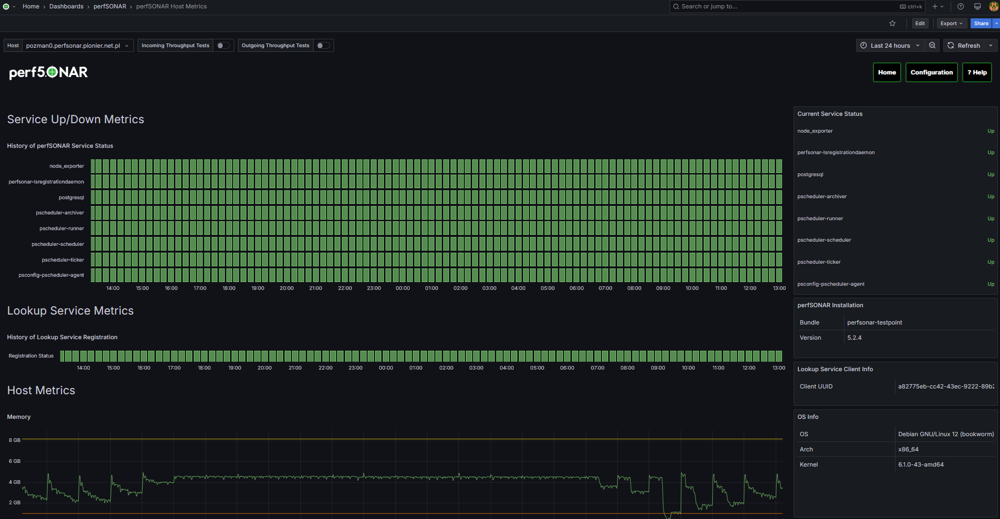
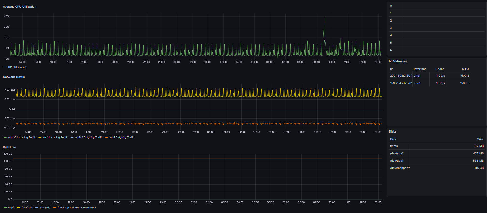
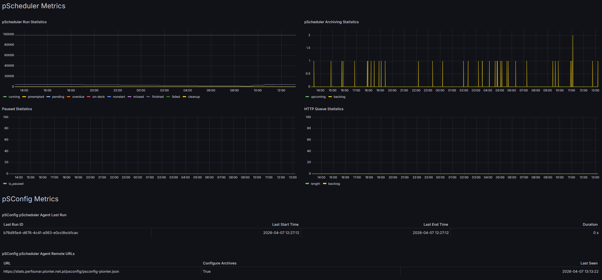
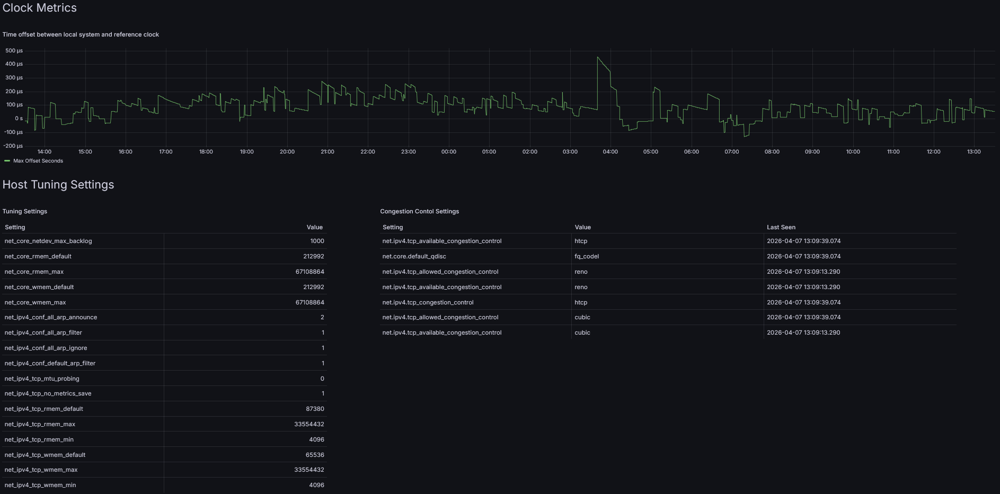

How to Use perfSONAR Grafana Dashboards¶
perfSONAR Main Dashboard¶
When you access https://ARCHIVE_HOSTNAME/grafana the perfSONAR Main Dashboard is loaded. It presents a general overview of central archive.
Similar perfSONAR Main Dashboard loads when you acces the perfSONAR Toolkit homepage.
The perfSONAR Main Dashboard contains the following panels:
Selected metrics - shows maximum throughput, packet loss and jitter over selected time period
Number of Tests Run - shows a number of tests as configured every 5 mins
Test Results Summary - clikable table presenting summary of test results (packet loss, throughput and latency) over selected time period, both ways. When clicked, goes to the details of results between hosts.
Full Test Listing - lists individual tests and their IDs over selected time period
Interfaces - lists detected network interfaces in this system
Test Results by Type - a summary of test result types
pSConfig Dashboards - lists references to this system’s dashboards configured from pSConfig
Buttons - includes links to other dashboards, documentation and this host’s configuration (Toolkit only)

All perfSONAR Measurements Dashboard¶
This is a Grafana dashboard to present matrix panels illustrating the test results between different source and destination hosts. The content of this dashboard and selection of tests is automatically build by a pSConfig agent running in the measurement archive host. Grafana polls the measurement archive about metrics and applies thresholds to determine the color of rectangles. Different thresholds can be defined for different metrics.
For more information about configuring thresholds and displays see Configuring Displays and Grafana.

perfSONAR Endpoint Pair Explorer Dashboard¶
This is a Grafana dashboard to present details of each test results. Depending on the types of tests configured individual panels are filled with data. The top part of the dashboard enables selecting source and destination hosts from drop-down lists or is already preselected when one gets into this dashboard from All perfSONAR Measurements matrix dashboard.
Each panel groups test results by IP protocol version and test tool if multiple types are configured.
Endpoint Pair Explorer Dashboard contains the following panels:
Throughput - shows throughput test results in both directions
Retransmits - shows the number of retransmits during throughput tests in both directions
Latency and Latency (reverse) - show latency test results
Packet Loss and Packet Loss (Reverse) - show packet loss during latency tests

Jitter and Jitter (Reverse) - show jitter during latency tests
RTT and RTT Reverse - show Round Trip Time (RTT) test results
Traceroute Hop Count - shows the number of traceroute hops from traceroute tests in both directions

Traceroute Unique Results and Traceroute Unique Results (Reverse) - list unique traceroute results observed over selected period of time
Raw Results and Raw results Reverse - advanced display to contain raw test results of all types over selected period of time

perfSONAR Host Metrics Dashboard¶
This dashboard is available as part of the archive installation and presents useful metrics regularly collected from measurement hosts and available for selection from the drop-down list in the top of the page. When enabled it also presents metrics collected in the archive host. The dashboard is also available as part of the perfSONAR Toolkit installation to present metrics from such host.
Note
By default perfSONAR Host Metrics are stored and available for the last 14 days only.
The perfSONAR Host Metrics dashboard contains the following panels:
Service Up/Down Metrics - shows the history of perfSONAR key services status
Current Service Status - corresponding list of services with their current status
History of Lookup Service Registration - shows the status host’s registration to Lookup Service
- Right-hand panels
perfSONAR Installation - lists instaled bundle type and its version
Lookup Service Client Info
OS Info - lists basic information about installed operating system
CPUs - lists discovered CPUs
Interfaces - lists discovered network interfaces
Disks - lists available storage devices

- Host Metrics
Memory - shows total amount of RAM and configured swap space. It also shows available amount of RAM and swap left in the host.
Average CPU Utilization - shows average CPU utilization
Network Traffic - shows network traffic on available interfaces
Disk Free - shows available (free) disk space in configured filesystems

- pScheduler Metrics
pScheduler Run Statistics - shows the number of runs for each status
pScheduler Archiving Statistics - backlog shows how many results are in the queue to be archived and haven’t been attempted. If this grows, pScheduler is not keeping up with the workload. Upcoming shows how many results have been put off until later because of failed attempts. If this grows, many attempts are failing, usually because there’s a problem with the archive rather than pScheduler itself.
Paused Statistics - shows whether or not pScheduler has been paused (i.e., it won’t run anything on the schedule)
HTTP Queue Statistics - the HTTP queue is an internal mechanism used to make requests of other pScheduler servers, such as to cancel tasks or runs. The Backlog shows how many requests have not yet been attempted and the Length shows the total number of items in the queue, including the backlog. Anything not in the backlog has been put off as a result of a failed attempt and will be tried again later.
- pSConfig Metrics
pSConfig pScheduler Agent Last Run - shows the period of time pSConfig pScheduler agent run last time to read the content of pSConfig templates
pSConfig pScheduler Agent Remote URLs - lists the URLs of pSConfig pScheduler agent is configured to read

Clock Metrics - shows time offset between local system and reference clock
Host Tuning Settings - shows current Linux network and congestion settings. Useful for optimizing performance of the measurement node.
